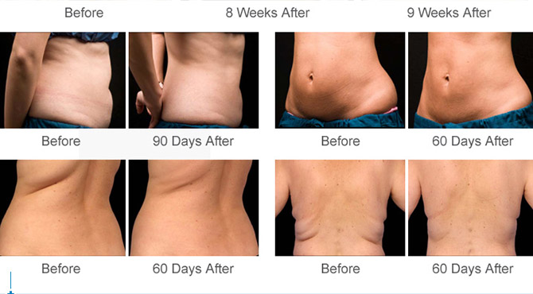

Cryolipolyysi
(vatsaa, jenkkakahvoja, selkään kertynyttä rasvaa)
1 alue 1krt — 195€
2 alue 1krt — 295€ (säästä 95€)
Rasvasolujen poistamista jäähdyttämisellä.…
Kylmälle altistuneet rasvasolut jäätyvät ja sulettuaan ne hajoavat lipideiksi ja poistuvat hitaasti luonnollisen metaboliikan avulla noin kahden kuukauden kuluessa. Säännöllinen liikunta tänä aikana optimoi rasvasolujen tuhoutumisen. Cryolipolyysi vaikuttaa vain rasvasoluihin, sillä ne ovat herkempiä kylmälle kuin muut solut.
Laitteessa on imumekanismi, joka pitää ylimääräisen rasvakerroksen kahden jäähdytyspaneelin välissä, jotka poistavat lämmön kudoksista. Toimenpiteen aikana cryolipolyysilaite pitää hoitolämpötilan 5°C:ssa. Yhden alueen cryolipolyysihoito kestää tunnin.
Hoitokertojen määrä riippuu rasvakerroksen paksuudesta. Tavallisesti 1-3 hoitokertaa aluetta kohden on tarpeen toteuttaa vähintään kahden kuukauden välein.
Sivuvaikutukset
Välittömästi cryolipolyysin jälkeen punaisuutta ja pieniä mustelmia saattaa ilmestyä hoidetulle kehon alueelle. Turvotusta, arkuutta, pistelyä ja ihon tunnottomuutta saattaa tuntua hoidetun alueen rasvakerroksessa noin 3-5 päivää myöhemmin ja tunne saattaa kestää jopa muutaman viikon. Tämän kaltaiset sivuvaikutukset eivät ilmene joka kerta eivätkä jokaiselle käyttäjälle.

Kehonmuokkaus
ultraäänikavitaatio, rasvaimu, infrapunalaser, kaksisuuntainen RF ja rullahieronta.
1 alue 1krt — 140€
2 alue 1krt — 200€
ULTRAÄÄNIKAVITAATIO
Rasvan poistaminen ja ylimääräisten rasvasolujen sulattaminen, vähentää selulliittiä, poistaa ryppyjä ja parantaa kehon aineenvaihduntaa.
Rasvasolujen kalvot ja ilmakuplat niiden ympärillä hajoavat ja niistä vapautunut rasva poistuu kehosta normaalin aineenvaihdunnan kautta.
Useampaa kuin kahta aluetta ei voi tehdä kerralla, koska kehon täytyy pystyä poistamaan rikottu rasva elimistöstä.
INFRAPUNALASER
Kun laserlevyt on asetettu iholle, kylmät punaiset lasersäteet läpäisevät ihon yltäen juuri sopivasti rasvasoluihin asti. Kun laser osuu rasvasoluihin, käynnistyy moniosainen tapahtumaketju. Aluksi solujen läpäisevyydessä tapahtuu muutos, vesi ja rasvahapot siirtyvät rasvakerroksen ja ihon väliin. Tämä pienentää rasvasolujen kokoa ja ne rupeavat järjestäytymään uudestaan.
KAKSISUUNTAINEN RF
Kaksisuuntainen RF saa rasvan sisällä olevat vesimolekyylit pyörimään erittäin nopeasti aiheuttaen kitkaa ja shokin, jonka ansiosta triglyseriitit poistuvat rasvasoluista. 1-10M RF energia läpäisee ihon jopa 4-15mm syvyyteen varmistaen, että jokainen ihon taso on lämmittynyt tasaisesti. Uusi kollageeni tiukentaa ihon. Kaksisuuntainen RF tunnistaa ja yhdistää rasvasolut, jotta ne ovat lähekkäin, stimuloi kollageenien uusiutumista ja estää roikkuvaa ihoa muodostumasta.
IMURULLAUSHIERONTA
Rullat hierovat ihoa, kohentaen paikallista verenkiertoa, nopeuttaen rasva-aineenvaihduntaa ja tiivistäen selluliittiä. Rullat lämmitetään poikittain, jotta syvyys olisi yhdenmukainen ja turvallinen.
Kehonmuotoilu radiotaajuuksilla tai rf-hoidolla
Olkavarret 1krt — 120€
Vatsa 1krt — 120€
Pakarat 1krt — 120€
Pohkeet 1krt — 120€
Reidet 1krt — 150€
Kehonmuotoilu radiotaajuuksilla poistaa rasvaa, kiinteyttää ihoa ja auttaa vähentämään selluliitin muodostumista, tehostaa kollageenituotantoa ja auttaa pääsemään eroon itsepintaisemmistakin rasvakertymistä, joihin liikunta ei ole tehonnut. Hoidon avulla saa myös vähentää roikkuvaa ihoa, kiristää ns. alleja, kiinteyttää raskauden jälkeistä vatsaa, pienentää ns. jenkkakahvoja ja jopa nostaa ja kiinteyttää takapuoltasi.
Radiotaajuuden energia läpäisee ihon kerrokset samalla lämmittäen ihon kudoksia, joihin kollageenikuidut ovat sulautuneet. Paikallinen lämmitys aikaansaa kollageenikuitujen välittömän supistelun ja rasvasolujen kutistumisen, samalla kun sidekudoksen solut stimuloituvat tuottamaan uutta kollageenia ja elastaania. Tämä saa aikaan kiinteämmän, tasaisemman ja nuoremman näköinen ihon, joka on näkyvästi kohentunut. Rasvasolut ovat vähentyneet ja itsepintaista selluliittia on vaikeampi huomata.
Toivotun lopputuloksen saavuttamiseksi yleensä useampi hoitokerta 4-8 kertaa.
Sinulle ei voida tehdä hoitoa jos sinulla on:
- tulehdustila kehossa
- olet raskaana tai imetät
- sairastat syöpää tai olet vakavasti muuten sairas
- sinulla on kasvain
- laskimo- tai verisuonitulehdus
- alueille joissa on metallia ( kohdun kierukka) ei hoitoa anneta.
Ultraääni-kavitaatio
1 alue 1krt — 120€
1 alue 2krt — 200€
Ultraääni-kavitaatio on kivuton hoito ja muotoilu vartalo ilman leikkausta. Ultraääni- kavitaation avulla saadaan rikottua ihonalaista rasvakudosta pysyvästi ja kivuttomasti. Teho perustuu ultraääni-impulsseihin, jotka rikkovat ihon alla olevien rasvasolujen kalvoja. Vapautunut rasva kulkeutuu maksan kautta aineenvaihduntaan normaalia reittiä - kuten ravinnosta saatu rasva ja poistuu kehosta muutamien viikkojen aikana.
Hoito vähentää selluliittia, lisää lymfavirtausta, parantaa ihon elastisuutta, pienentää suuria ihohuokosia, tekee ihosta sileämmän ja auttaa laihtumaan. Sisältä imurullaus, ifrapuna ja radiofrekvenssi. Näin saamme tehokkaan alun puhdistumiseen.
Hoitoalueet:
- etureidet
- takareidet
- sisäreidet
- pakarat
- vatsa
- jenkkakahvat
- käsivarret
Jo ensimmäisen hoitokerran jälkeen huomaat selviä tuloksia (Vyötärö -2-4 cm, reidet -1-2 cm)
Paras tulos saavutetaan hoitosarjana 4-8 kerta.
Fysioterapia:
LPG-hieronta on tehokas ja hellävarainen apu erilaisten kipu-, jännitys- ja turvotustilojen oireiden helpottamiseen. Kyseessä voi olla esimerkiksi pitkäaikainen selkäkipu säteilyoireineen, vamman jälkeinen kipu tai kehon lymfa- eli nestekierron häiriö.
LPG:llä on saavutettu hyviä tuloksia mm. fibromyalgian epäsäännöllisten ja vaihtelevien kipujen sekä erilaisten leikkauksien jälkitilojen kuten turvotuksen hoidossa. Aineenvaihdunnan paraneminen edistää myös vamma-alueen paranemista.
- erilaiset kiputilat
- fibromyalgia
- laskimon vajaatoiminta ja muut lymfatoiminnan häiriöt
- arpikudos
- niveljäykkyys
- leikkausten jälkitilat
LPG -hieronta vauhdittaa kehon aineenvaihduntaa, jonka ansiosta laitteella pystytään nopeuttamaan lihasten palautumista merkittävästi. LPG-hoitoja käytetään yleisesti myös erilaisten urheiluvammojen tai niihin liittyvien leikkausten jälkitilojen hoitoon, sekä kehon muokkaukseen. LPG-laitetta käyttävät mm. useat kansainvälisen huipputason jalkapalloilijat, pyöräilijät ja yleisurheilijat
LPG-hieronnan osa-alueita:
- lihasten valmisteleminen urheilusuoritukseen
- lihaksia ja kehoa palauttava hoito
- lihas-, jänne- ja fascia -hoidot (esim. krampit, repeämät ja revähdykset)
Et voi tehdä jos sinulla on syöpä, kuume/flunssa, akuutissa vaiheessa oleva sairaus, vakava sydänsairaus, ihoinfektio, pinnallinen laskimotulehdus. Paikalliset kontraindikaatiot- esteet: Raskaus, tulehtuneet suonikohjut, avohaava, ihonalaiset implantit, sydämentahdistin, herpes, tyrä, tatuointi (uusi), pahanlaatuinen ihottuma.